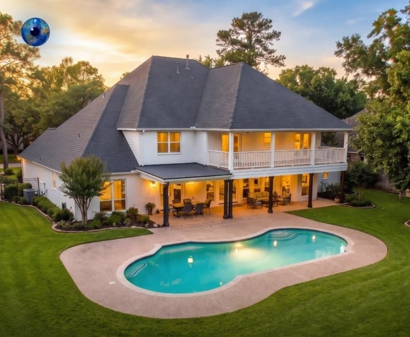
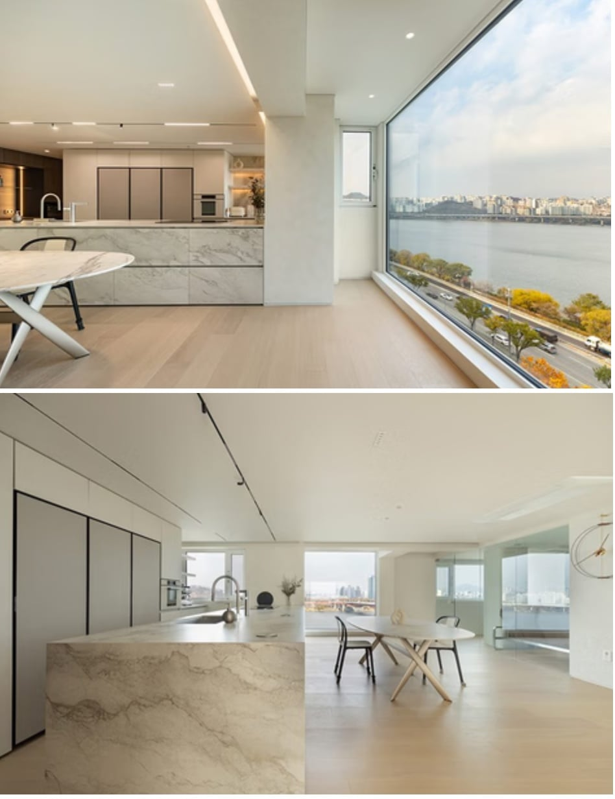

단독주택

프리미엄 아파트
같은 가격에 살 수 있다면 둘 중 어디에서 살고 싶음?

단독주택

프리미엄 아파트
같은 가격에 살 수 있다면 둘 중 어디에서 살고 싶음?
저 주택사는 사람이 부지런할 필요가 있을까?
현대적인 주택 안살아보고 시골 할머니집 기억으로 딘독주택 생각하는 애들 게믾은듯
글게 뭐 그리 보수수리 할게있다고
변기 내부 부속품이랑 전구말고 하는거없음
잔디 봄가을엔 안깍아도 되고 골프장 수준으로 보기 좋게 관리하는게 빡센거지 한여름에도 대충 깍아도 됨
현댁적인 주택은
지가 알아서 잔디깍고
마당 청소하고
집앞 눈 알아서 치우냐?
잔디깍기 눈치우기 로청 나온거 몸?
써보고 하는 얘기임?
애초에 잔디 잘안깜. 파쇄석이나 디딤석깔고
아니면 콘크리트 침. 마당을 애초에 안두는 주택도 많어.
본문엔 있음
프리미엄 아팟 살수잇는 능력자면
무슨상관이 잇음??? ㅎ
주택 살기시작하니깐 느려터진 엘베 기다리고 탈때면 미칠거같음
관리주체가 본인이면 존나 피곤한일 많음
설비관리에 일가견 있다면 할까말까
프리미엄 아파트가 있다 = 주변 인프라가 좋다
고로 아파트 ㄱ다
위치는?
저게 같은 가격일라면 단독은 겁나 외곽이잖아
똑같이 도심 한가운데다?
당연히 주택이고
풀 자랄게 벌레 들어올게
주택도 사진 똑같이 3개 넣지
아파트는 위치, 뷰 ,내부까지 넣었네
관리해주는 사람 있고, 주변에 인프라 잘되어있음 단독주택, 그게 아니라면 프리미엄
단독주택은 관리할거 생각만해도 골치부터 아픔..
우리집 마당 걍 손 놓았더니 정글됨..
주택은 호불호 엄청 심함 ㅋㅋㅋ
난 좋아서 주택 살지만 누가 산다고 하면 100번 생각해보고 오라함
사진속 주택이 어디에 있느냐가 문제지
깡촌에 있으면 걍 프리미엄 아파트지
요즘 패시브 하우스 한 번 가보니까 단독은 돈없어서 못사는 거더라
집 공기부터 365일 쾌적함
단독 주택은 관리가 어우 ㄷㄷ
키배하면서 지 서울에 집있고 도시세 지방세 제외 재산세만 200나오는데 종부세는 안내고(?) 월급은 세전 900이라고 허언즌 구라치던병신이 이딴거나 렉카하고있네 ㅋㅋㅋㅋㅋ 아 ㅋㅋㅋㅋ
저 집사고 통장에 얼마 남는지 중요하지 수백억 남아있으면 주택살면서 돈으로 주변관리 하면 되는거고
집사고 얼마 안남으면 도심지 고급아파트가 무조건이지
관리비는 조상님이 내줌?
애초에 관리비 못낼만큼 돈없는데 사는놈은 병신인데? 혹시 그런부류임?
폭유BBW퍼리메이드 있으면 단독주택
주택 살아봤으면 사람이 얼마나 부지런 해야하는지 알 수 있다. 그런데 그냥 회사랑 가까운 곳 살듯